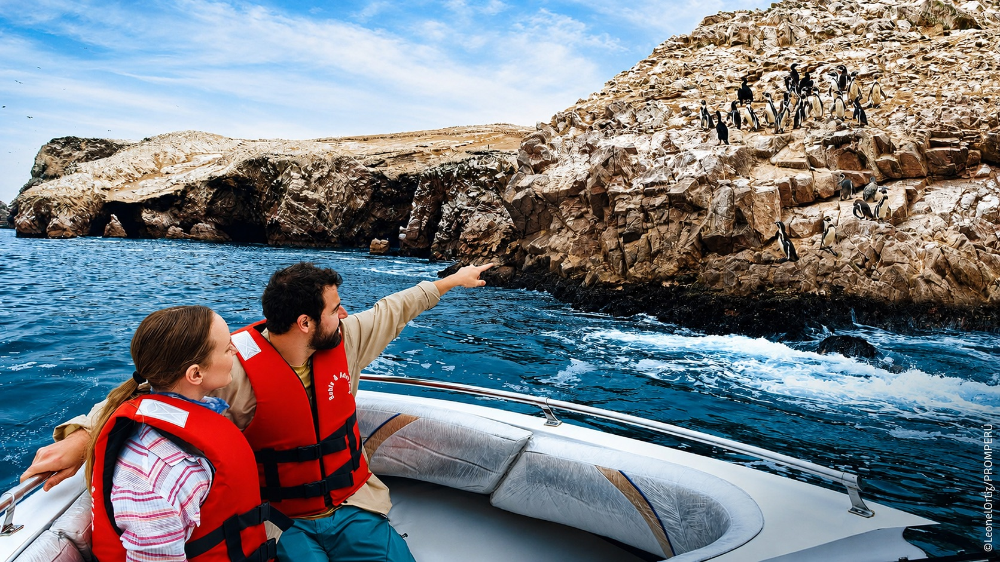

Parque Nacional del Chicamocha y teleférico
Contempla el cañón del Chicamocha, recorre PANACHI y cruza en teleférico según la opción contratada.
Información esencial
Sobre esta experiencia
Contempla el cañón del Chicamocha, recorre PANACHI y cruza en teleférico según la opción contratada. La operación se confirma con el proveedor local y puede ajustar el orden de las paradas por tráfico, clima, aforo, cierres o condiciones de seguridad.
Lo más destacado
- Ruta estructurada con tiempos realistas y paradas claramente identificadas.
- Guía local y logística de inicio/final confirmada en el voucher.
- Cargos obligatorios, opcionales y no incluidos informados antes de la compra.
- Opción compartida y alternativa privada sujeta a disponibilidad.
Horarios y operación
| Días de operación | Según calendario y disponibilidad del proveedor local |
|---|---|
| Confirmación | En un máximo de 24 horas; sujeta a cupos, entradas y permisos |
| Punto de encuentro | Se informa con dirección y referencia visible en el voucher |
| Recogida | Hoteles seleccionados o punto central, según opción |
| Finalización | Mismo punto o zona indicada en la confirmación |
Itinerario detallado
Los horarios son aproximados y se reconfirman antes del servicio.
- 07:30
Salida de Bucaramanga
Traslado panorámico.
Duración estimada: según operación - 09:30
PANACHI
Ingreso, miradores y orientación.
Duración estimada: según operación - 11:00
Teleférico
Recorrido sobre el cañón según operación climática.
Duración estimada: según operación - 13:00
Almuerzo libre
Tiempo dentro del parque.
Duración estimada: según operación - 14:00
Atracciones y miradores
Tiempo libre.
Duración estimada: según operación - 16:00
Regreso
Traslado a Bucaramanga.
Duración estimada: según operación - 18:00
Fin del tour
Llegada aproximada.
Duración estimada: según operación
Qué incluye
- Guía o anfitrión local según la actividad
- Transporte indicado en el itinerario
- Asistencia operativa durante el servicio
- Entradas expresamente señaladas en la opción reservada
No incluye
- Alimentos y bebidas no descritos
- Tasas, entradas o actividades opcionales no seleccionadas
- Gastos personales y propinas
- Traslados fuera de la zona publicada
Entradas y pagos adicionales
| Concepto | Condición | Información |
|---|---|---|
| Entradas de la ruta principal | Según opción | La ficha de precio y el voucher deben indicar una por una cuáles están incluidas. |
| Servicios opcionales | No incluidos | Se pagan solo si el viajero los solicita y acepta el precio previamente. |
Recomendaciones
- Llevar documento de identidad y voucher digital.
- Usar calzado y ropa apropiados para el clima y la actividad.
- Informar alergias, restricciones alimentarias o necesidades de asistencia.
- Presentarse 15 minutos antes o estar listo durante la ventana de recogida.
Restricciones y accesibilidad
La accesibilidad es parcial y debe confirmarse caso por caso. Menores siempre acompañados. No se admiten conductas que comprometan la seguridad, la fauna, las comunidades o el patrimonio.
Cancelación
Cancelación gratuita hasta 24 horas antes para la tarifa flexible. Entradas nominativas, permisos, tasas y componentes no reembolsables conservan las condiciones del proveedor.
Voucher y confirmación
El voucher debe mostrar producto, fecha, pasajeros, hora, ventana de recogida, dirección, contacto operativo, inclusiones y pagos pendientes.
Preguntas frecuentes
¿El itinerario es definitivo?
Los atractivos centrales se mantienen, pero el orden y los tiempos pueden variar por condiciones operativas, clima, tráfico, cierres o instrucciones de autoridades.
¿Qué debo llevar?
Documento de identidad, calzado adecuado, protección solar, agua, efectivo en moneda local y los elementos específicos indicados en el voucher.
¿La recogida está incluida?
Depende de la opción seleccionada. El voucher confirma la zona, ventana de recogida o punto de encuentro exacto.
¿Puedo cancelar?
La tarifa estándar permite cancelación gratuita hasta 24 horas antes, salvo entradas nominativas, permisos o componentes expresamente no reembolsables.